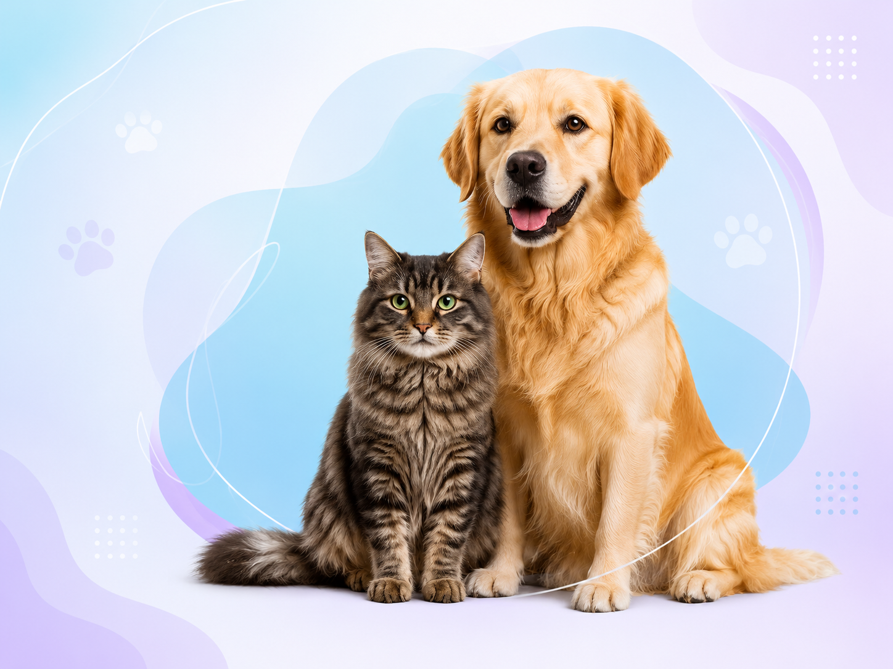
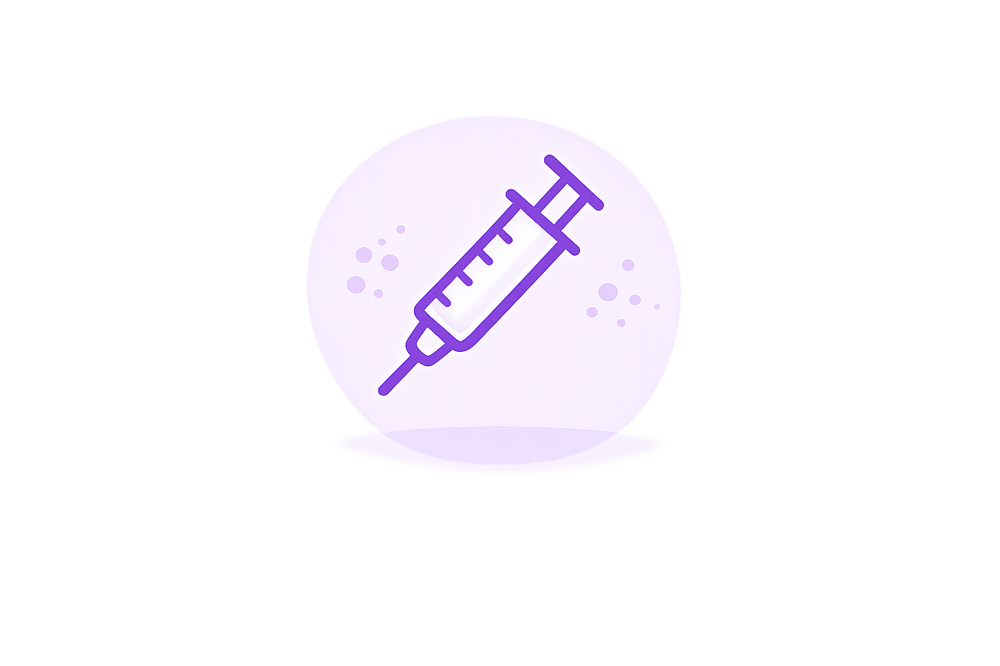
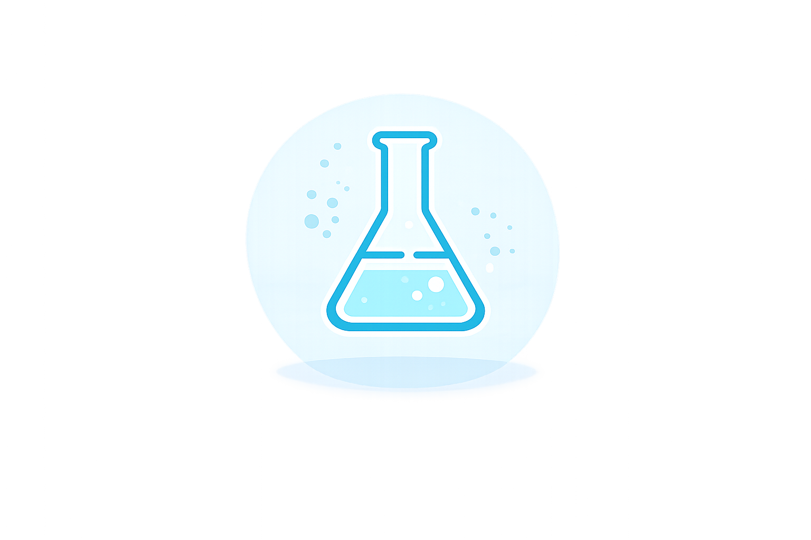

Recibe orientación veterinaria profesional desde cualquier lugar, con seguimiento personalizado y atención cercana para tu mascota.

Mascotas atendidas
Satisfacción
Soporte


Tu Amigo Veterinario es un centro de atención veterinaria online que brinda orientación profesional, seguimiento clínico y acompañamiento permanente a tutores de perros y gatos mediante telemedicina.
El servicio será liderado por una médica veterinaria con Magíster en Clínica de Pequeños Animales, permitiendo resolver dudas, realizar controles posteriores a consultas presenciales, orientar sobre urgencias, apoyar tratamientos prolongados y facilitar el acceso a medicina veterinaria especializada.
El proyecto busca reducir la brecha de acceso a servicios veterinarios, especialmente para familias que viven en sectores rurales o alejados, entregando atención cercana, profesional y accesible.
Cada mascota recibe orientación adaptada a sus necesidades.
Atención liderada por Médica Veterinaria con formación avanzada.
Accede a orientación profesional desde cualquier lugar.
No solo resolvemos dudas, acompañamos todo el proceso.
"Gracias a Tu amigo Veterinario pude resolver una urgencia de mi gatita sin salir de casa."
María G."La orientación fue clara y muy profesional."
Carlos R.Completa tus datos y te contactaremos vía WhatsApp para coordinar tu teleconsulta.